(2007-03-21 15:23:21)
站在纯操作的角度，由于任何买卖点，归根结底都是某级别的第一类买卖点，因此，只要搞清楚如何判断背驰，然后选好适合的级别，当该级别出现底背驰时买入，顶背驰时卖出，就一招鲜也足以在市场上混好了。【韶山映山红】这里是针对本级别背驰的情况说的，前提条件是“搞清楚如何判断背驰”。另外，如果没有本级别背驰，而是小转大导致走势类型的结束，就会麻烦。甚至，如果小级别延伸破坏大级别背驰，这个“一招鲜”就不灵了。】
不过，任何事情都应该究底穷源，这有点像练短跑，跑到最后，提高0.01秒都很难，所以越往后，难度和复杂程度都会越来越深，【韶山映山红】缠论的学习，如果只学三招两式，一招鲜，看上去容易。要想全面系统的掌握，就会觉得越学越难，越学越复杂。】如果一时啃不下来，就选择可以把握的，先按明白的选择好操作模式，【韶山映山红】只掌握了一部分内容，这样的操作模式天生有漏洞，所以要有相应的补救措施，也就是退出机制。】等市场经验多了，发现更多需要解决的问题，有了直观感觉，再回头看，也不失为一种学习的办法。【韶山映山红】学明白了再实践，比较稳妥。学习，实践，再学习，也不失为一种学习的办法。】当然，都能看懂并能马上实践，那最好。【韶山映山红】学习完整的缠论，买点买，卖点卖，就不用单独的补漏了。】
【韶山映山红】若禅精舍（陈秋明）：
学习，学且习之。所谓学，印证与对照，对前人智慧在博览的基础上相互印证，以剖析期间现实逻辑。所谓习，将所学内容落实到具体现实上，在践履、实践的基础上，不断融合与深刻体会所学所思，以此推动更多的学与更多的习。学以致用，其实就是学以致习。
理论内容，在刚开始的时候，都是相对简单的，这些简单的内容可以先掌握了，甚至先用了。在用的过程中，一般都会遇到各种各样的问题，这时可以再向深处寻找答案。学一点、用一点、懂一点，某阶段内容已经不能满足需要了，再去向上寻找，再学一点、再用一点、再懂一点。
】
前面谈了有关走势类型连接结合的多义性问题，虽然已多次强调多义性不是含糊性，但不少人依然产生误解，认为走势就可以胡乱分解了，这是不对的。
多义性是与走势的当下性密切相关的，【韶山映山红】多义性分解组合的目的，就是找到最适合当下操作的走势形态，当下的走势发生了变化，就有可能导致前面一部分走势分析重新做分解组合。】但对已完成走势类型连接进行相应的分解，就如同解问题设定不同的参数，虽然参数的设定有一定的随意性，但一个好的参数设定，往往使得问题的解决变得简单。【韶山映山红】对多义性分解组合的要求就是“使得问题的解决变得简单”。首先是“解决”，其次是“简单”。】
【韶山映山红】换句话说，正常的走势类型分析，有时候不能满足当下分析的需求，所以要求助于多义性分析。那么，是什么情况？为什么呢？★以后研究。】
根据结合律，如何选择一种恰当的走势分解，对把握当下的走势极为关键。【韶山映山红】多义性分解组合的目标是更好地把握当下的走势，遵守结合律是基本准则。】
显然，一个好的分解，其分解规则下，必须保证分解的唯一性，否则这种分解就绝对不可能是好的分解。【韶山映山红】分解规则必须保证分解的唯一性，不能有“或者”的情况。这样才能做到完全分类。】
其中，最简单的就是进行同级别分解。【韶山映山红】这里说的“最简单”是“使得问题的解决变得简单”。除了同级别分解，其他分解方法的解说在36课有。】
所谓同级别分解，就是把所有走势按一固定级别的走势类型进行分解。【韶山映山红】只有一个级别。没有高级别，也没有低级别。】
根据“缠中说禅走势分解定理”，同级别分解具有唯一性，不存在任何含糊乱分解的可能。【韶山映山红】同级别分解有正确答案，不存在多义性组合的问题。】
【韶山映山红】“缠中说禅走势分解定理一”：任何级别的任何走势，都可以分解成同级别“盘整”、“下跌”与“上涨”三种走势类型的连接。】
【韶山映山红】若禅精舍（陈秋明）：
同级别分解，对于前面的均线、中枢之类的内容，相对比较复杂。但这复杂也是相对的，理论上就比较简单，但实践起来就比较困难。像前面的盘整背驰、趋势背驰，下盘下之类的有固定模式的买卖点，学了就可以用。但在资金量大了一些之后，短线已经不能满足资金利用风险最小化的要求，或者资金量虽然不算大，但考虑跑来跑去嫌麻烦，就想在一个股票里面来回吸血的，走势的多义性分解与同级别分解，就最好能去掌握一下。
对于初学的人，同级别分解和多义性之类的内容，完全可以不用考虑，前面的三类买卖点和均线系统部分理解了，完全就可以先用起来的，简单而适用。如果心性控制的比较好，稳定盈利是没问题的，这里的内容是后面的东西了。
虽然不需要深入去理解同级别分解相关理论知识，但通过对这部分内容的阅读与思考，可能会对走势的理解有好处。
】
同级别分解的应用，前面已多有论述，例如，以30分钟级别为操作标准的，就可用30分钟级别的分解进行操作，对任何图形，都分解成一段段30分钟走势类型的连接，操作中只选择其中的上涨和盘整类型，而避开所有下跌类型。【韶山映山红】这个“上涨和盘整类型”、“下跌类型”是指什么级别的？30分钟级别？还是“一段段30分钟走势类型的连接”构成的更大级别？★】
【韶山映山红】缠论不预测，也就是说，我们并不知道下一个走势是什么类型，那么，如果这个“上涨和盘整类型”、“下跌类型”是指“一段段30分钟走势类型”，我们就没有办法选择是否操作了。只有在更大级别，我们才知道当下正处于上涨趋势还是盘整，或者是下跌趋势，所以这个“上涨和盘整类型”、“下跌类型”应该是指日线级别的走势类型。
“以30分钟级别为操作标准的”，做“30分钟级别的分解”，操作符合判断的每一段。而这些段，都是日线级别走势类型的次级别。也就是说，操作级别的描述，不是指看到的中枢的级别，而是中枢的次级别。
在不预测的基础上，如何“操作中只选择其中的上涨和盘整类型，而避开所有下跌类型。”呢？★这里所说的操作，应该是日线级别的第一类买点开始介入，操作30分钟的相应段，在日线级别趋势背驰的第一类卖点退出，或者是顶部中阴中枢的第三类卖点退出，或者是小转大的转折之后，等到新走势的第一个中枢的第三类卖点退出，也就是说，做到顶部结构被破坏为止，所以是“上涨和盘整类型”。】
对于这种同级别分解视角下的操作，永远只针对一个正在完成着的同级别中枢，一旦该中枢完成，就继续关注下一个同级别中枢。
【韶山映山红】30分钟级别的同级别分解，所有走势都分解成一段一段30分钟走势类型的连接，“永远只针对”的、“正在完成着的”、“同级别中枢”是哪个中枢？什么级别？这个中枢完成的标志是什么？也是第三类买卖点吗？★】所有走势都分解成一段一段30分钟走势类型的连接，然后，就可以只做abc盘整背驰判断，这个abc三段就是正在完成着的同级别中枢，视为一个日线级别的中枢。这里的完成，不关心第三类买卖点，只是关注形成中枢的三段，abc的c走完，开始d时，就是关注形成bcd三段中枢了。】
注意，在这种同级别的分解中，是不需要中枢延伸或扩展的概念的，【韶山映山红】准确的说，是不需要中枢延伸升级或扩展升级的概念。5分钟中枢可以中枢延伸或扩展成30分钟中枢，30分钟中枢就不再延伸或扩展了。】对30分钟来说，只要5分钟级别的三段上下上或下上下类型有价格区间的重合就构成中枢。【韶山映山红】最简单的中枢就只有三段重合。但是，不等于所有的分解都是三三三的划分。】
如果这5分钟次级别延伸出6段，那么就当成两个30分钟盘整类型的连接，在这种分解中，是允许盘整+盘整情况的。【韶山映山红】延伸出的那6段，当成两个30分钟盘整类型的连接，再加上开始的中枢，一共是三个30分钟盘整类型的连接。】如果这5分钟次级别不是延伸出6段，而是2段、4段，又怎么划分？完全不提，是不是表示不予划分？★以后研究。】
注意，以前说不允许“盘整+盘整”是在非同级别分解方式下的，这在下面的课中会讲到，所以不要搞混了。【韶山映山红】因为“盘整+盘整”就是更大级别的盘整，所以不允许。★实际上的意思是，一般性的划分，该升级的就要升级，同级别的划分，才可以不升级。】
【韶山映山红】若禅精舍（陈秋明）：
多义性不是随意性，这在前文已经论述过。任何对走势的多义性分解，必须符合理论，是在理论框架内进行多义性的组合。这样的多义性组合不会有任何问题，反而能够以另外一个视角去分析走势，多个视角的相互印证将使分类更加完整以及结果更加明确。
相对简单的，就是同级别分解了。所谓同级别分解，就是在某个固定级别上，把走势拆解为N段同级别走势的连接。例如以30分钟进行操作，就可以把走势都拆解为30分钟级别的，至于在什么周期图上拆解，是无所谓的事情。根据一般的经验，30分钟级别的图，就是在30分钟周期图上比较清晰，如果是用标准笔和线段递归上来的30分钟级别，可能60分钟或者日线图上才能看的清晰，而其实用什么周期的图，都是无所谓的事情，走势就是走势，客观存在的现实不会因为任何定义有任何改变。
】
有人可能马上要问，同级别分解的次级别分解是否也是同级别分解的。
答案是，不需要。
这里在思维上可能很难转过弯，因为一般人都喜欢把一个原则在各级别中统一运用，但实际上，你完全可以采取这样的分解形式，就是只要某级别中进行同级别分解，而继续用中枢扩展、延伸等确定其次级别，【韶山映山红】神燕的走势划分就是这样的，先是所有的走势都分解成1分钟，然后统一升级到5分钟，再统一升级到30分钟，结果就是，在一个30分钟走势划分里，不再有1分钟的走势类型，因为都被分配给5分钟走势了。】
这里只涉及一个组合规则的问题，而组合的规则，是为了方便操作以及判断，只要不违反连接的结合律以及分解的唯一性，就是允许的，而问题的关键在于是否明晰且易于操作。【韶山映山红】什么样的组合会违反分解的唯一性？★】
【韶山映山红】在走势还没有走出来的时候，就是说，处于中阴状态，还不知道是否能够走出什么样的结构，就要按照同级别分解的划分去做当下的划分。本级别转折，还是更大级别的升级划分，是到了一定程度之后的追认，不能当下，也没有操作意义。★】
说得深入一点，走势分解、组合的难点在于走势有级别，而高级别的走势是由低级别构成的，【韶山映山红】难点在于每一段走势都有自己的级别，这些级别是各自独立生成的，所以是各种级别随意的混杂在一起，形成一种乱象。】
处理走势有两种最基本的方法，一种是纯粹按中枢来，一种是纯粹按走势类型来，【韶山映山红】纯粹按中枢来，操作第三类买卖点，根据中枢的演化，延伸、扩展和新生，来操作。纯粹按走势类型来，中枢是走势类型的组成部分，根据走势类型的终结与转折来操作。】
但更有效的是在不同级别中组合运用。【韶山映山红】不同级别采用不同的分析侧重。互相借鉴，互相佐证。高级别的中枢分析，需要分析低级别走势类型的转折和演化。低级别的走势类型分析，在转折的中阴阶段就需要做中枢分析。】★中阴阶段的走势类型划分不明确，一般都要按中枢震荡来分析。而走势明确之后，这个中阴阶段的中枢往往并不是走势类型的中枢，就不再当做中枢对待，而是转过来做走势类型分析。当然，更大级别上可能还是做中枢分析。你中有我，我中有你，不是分割的，更不能对立。】
因此，完全合理、不违反任何理论原则的，可以制定出这样的同级别分解规则：
在某级别中，不定义中枢延伸，允许该级别上的盘整+盘整连接；【韶山映山红】在不满足中枢延伸升级的情况下，比如7段延伸，不当做一个本级别走势的中枢，而是分解为“该级别上的盘整+盘整”。】
与此同时，规定该级别以下的所有级别，都允许中枢延伸，不允许盘整+盘整连接；【韶山映山红】该级别以下的所有级别都不做同级别分解，不满足中枢延伸升级条件的时候，划分为一个本级别的中枢。当满足中枢延伸升级条件的时候，划分为一个高级别的中枢。】
至于该级别以上级别，根本不考虑，因为所有走势都按该级别给分解了。【韶山映山红】都分解为一段段的该级别走势类型，没有“该级别以上级别”的划分。】
【韶山映山红】同级别分解规则明确了中枢延伸的情况做“盘整+盘整连接”处理。那么，为什么完全不提扩展升级的中枢怎么分解呢？★因为，我们看问题的方向搞反了。中枢扩展升级，才是重新组合的划分，不做扩展升级划分，不去重新组合，本来就是自然形成的状态，所以不需要再去说什么分解。 而中枢延伸不一样，延伸升级的中枢，实际上并没有没有形成真正的走势类型，所以要特别说明一下划分方法。】
按照以上的同级别分解规则，用结合律很容易证明，这种分解下，其分解也是唯一的。【韶山映山红】这个怎么证明？★以后研究。】前面说的是：根据“缠中说禅走势分解定理”，同级别分解具有唯一性，不存在任何含糊乱分解的可能。 “缠中说禅走势分解定理一”：任何级别的任何走势，都可以分解成同级别“盘整”、“下跌”与“上涨”三种走势类型的连接。】
这种分解，对于一种机械化操作十分有利。这里，无所谓牛市熊市，例如，如果分解的级别规定是30分钟，那么只要30分钟上涨就是牛市，否则就是熊市，完全可以不管市场的实际走势如何，在这种分解的视角下，市场被有效地肢解成一段段30分钟走势类型的连接，如此分解，如此操作，如此而已。【韶山映山红】这里说的上涨、下跌不是说趋势，只是说价格的涨跌。盘整虽然没有方向，但是有价格的涨跌，有向上盘整、向下盘整。缠论的盘整走势不能归类为震荡市。所以完整的表述应该是：上涨趋势和向上盘整就是牛市，下跌趋势和向下盘整就是熊市。因为同级别分解之后，全部变成了一段段的线，就只有向上、向下的区别了。】
注意，这种方法或分解是可以结合在更大的操作系统里的。【韶山映山红】不同级别的同级别分解的机械操作法，可以同时存在于“更大的操作系统里”。】
例如，你的资金有一定规模，那么你可以设定某个量的筹码按某个级别的分解操作，另一个量的筹码按另一个更大级别的分解操作，这样，就如同开了一个分区卷钱的机械，机械地按照一个规定的节奏去吸市场的血。【韶山映山红】不同级别的同级别分解对应不同量的筹码，分仓操作。参考《教你炒股票40：同级别分解的多重赋格》。】
这样不断地机械操作下去，成本就会不断减少，而这种机械化操作的力量是很大的。【韶山映山红】前提条件是长期持股。】
其实，根本无须关心个股的具体涨幅有多少，只要足够活跃，上下震荡大，这种机械化操作产生的利润是与时间成正比的，只要时间足够长，就会比任何单边上涨的股票产生更大的利润。【韶山映山红】利润是振幅和频率的函数。与时间正相关。】
甚至可以对所有股票按某级别走势的幅度进行数据分析，把所有历史走势都计算一次，【韶山映山红】属于股性的评估。有时间可以试试。★★★可以做个专题。以后研究。】选择一组历史上某级别平均震荡幅度最大的股票，不断操作下去，这样的效果更好。【韶山映山红】震荡幅度初选，震荡频次也要考虑。★以后研究。】
这种分解方法，特别适合于小资金又时间充裕的进行全仓操作，也适合于大资金进行一定量的差价操作，更适合于庄家的洗盘减成本操作。【韶山映山红】操作仓位取决于掌控能力，以及市场容量。】
当然，每种在具体应用时，方法都有所不同，但道理是一样的。【韶山映山红】每种资金的操作方法的细节都有所不同，但道理是一样的。】
【韶山映山红】若禅精舍（陈秋明）：
就以30分钟级别同级别分解为例，一般可行的程序是这样的。把走势图切换到五分钟周期上，在已经存在的图形中，标出所有五分钟级别走势类型。在标识这些五分钟级别走势类型的时候，三段中枢和六段中枢是一个级别的，不需要拆分，例如下来一个五分钟级别盘整走势类型，其中盘整区域一般会把macd拉回零轴，这个盘整有次级别三段，结束后又是一个五分钟趋势上来，该趋势第一个中枢有次级别六段，那么这个盘整和趋势，都是五分钟级别走势类型。
将所有的五分钟级别走势类型都标识了之后，再根据五分钟级别走势类型来组合30分钟级别走势类型。但在30分钟层面的同级别分解里面，是不允许30分钟中枢加30分钟中枢的，和五分钟里面的不同，这主要是为了分解的简便，如果五分钟上也不允许中枢加中枢，那么工作量会增加很多，而且那样的话，根据五分钟分解递归上来的三十分钟分解，图形会很别扭不利于阅读。
上图是沪指的某段一分钟级别走势，图中的数字之间都可以作为一分钟级别走势类型来看（实际上都是标准线段，但原文这里还没涉及到相关内容）。显然，这是个一分钟级别上涨加五分钟级别中枢的图形，12是一分钟级别上涨，23、34、45、56、67、78、89、910一共八段一分钟走势类型重叠，构成五分钟级别中枢。
但在同级别分解的视角下，14+47+710，三段五分钟级别走势类型的连接，就是最好的分解结构，这里面，感觉别扭的，是7-10这一段，但盘整本来就可以这样，还有另外一种奔走型的，看起来更别扭。但这种方法不管。另外，可以注意到，图中67与56段的级别，其实并不一致，67期间的中枢明显有延伸，但这在一分钟层面上，是允许的，但在五分钟层面上就不可以。像上图，还有个组合方式：1-6为第一个五分钟级别走势类型，12是围绕26中枢的次级震荡，6-11又是另外一段，这样每一段都是aAb结构。两种不同的分解结构如下：
对于第二幅图，10之后目前只有11，那么从10开始，根据走势必完美，就一定后面有12、13，使10开始的五分钟级别走势类型完美。
这里比较复杂的是，当下的走势组合，可能会因为后续走势的陆续出现，而出现调整，这是考验当下分解熟练程度的事情。另外，对上面两种分解而言，理论上都符合五分钟级别分解，但在前后走势的整体走势图中，如何去选择，这是个难点，而这难点只有不断去实践和总结印证才能掌握。
例如上图的10位置，在走势到9的时候，并不知道10的高点在哪里，那么在9那个当下，后续的分解就有多种可能，如果10直接上去，突破4的高点并且11在4之上，那么走势就要从9开始分解。而如果10的高点在7之下，那么可能又是另外一种分解。
】
具体的操作程式，按最一般的情况列举如下，【韶山映山红】除了这种“最一般的情况”，还有什么样的情况？★以后研究。】
注意，这是一个机械化操作，按程式来就行：不妨从一个下跌背驰开始，以一个30分钟级别的分解为例子，【韶山映山红】这里的“下跌背驰”是什么级别？什么样子？★以后研究。】“按30分钟级别的同级别分解”，这里的“下跌背驰”是日线级别下跌趋势的背驰吗？下面操作分析看上去很像。问题是，同级别分解的时候，没有更高级别的走势。从这个角度看，不应该是日线级别下跌趋势的背驰。】那么，就应该是同级别分解的线段类盘整背驰。也就是说，30分钟的三段，新低+盘整背驰。在同级别分解的划分中，必然有一个30分钟级别的“向上的第一段走势类型”。】
按30分钟级别的同级别分解，必然首先出现向上的第一段走势类型，根据其内部结构可以判断其背驰或盘整背驰结束点，先卖出，【韶山映山红】第一段向上的走势类型，前面没有对比段可以比较，无法确定操作，只能依靠内部结构来判断反弹段自己的结束，而且在反弹段自己结束的时候卖出，活脱脱一个高级别背驰之后的次级别反弹段啊。这时候只做段的内部判断，没有中枢级别的盘整背驰判断，也没有30分钟级别的段间盘整背驰判断。】
然后必然有向下的第二段，这里有两种情况：1、不跌破第一段低点，重新买入，【韶山映山红】段间比较，不新低就是线段类走势的二买。中枢级走势分析，一买后不新低就是中枢级别二买。】2、跌破第一段低点，如果与第一段前的向下段形成盘整背驰，也重新买入，【韶山映山红】段间比较，新低同时线段类盘整背驰，还是线段类走势的二买。中枢级走势分析，一买后新低并且线段类盘整背驰的，还是中枢级别二买。】否则继续观望，直到出现新的下跌背驰。【韶山映山红】跌破第一段低点，与“第一段前的向下段”没有形成线段类盘整背驰，就会走出线段类下跌趋势，所以观望。直到出现新的线段类盘整背驰。】
在第二段重新买入的情况下，【韶山映山红】第二段重新买入的情况，说明第二段要么没有新低就内部背驰，要么新低但是有线段类盘整背驰。】然后出现向上的第三段，相应面临两种情况：1、超过第一段的高点；2、低于第一段的高点。【韶山映山红】等于第一段高点的时候，和低于同样处理。】
对于第二种情况，一定是先卖出；【韶山映山红】反弹第三段没有新高，段间比较，不新高就是线段类走势的二卖。中枢级别走势分析，趋势背驰也只保证三段反弹，第三段没有新高，说明反弹暂时结束，所以卖出。】
第一种情况，又分两种情况：1、第三段对第一段发生盘整背驰，这时要卖出；【韶山映山红】段间比较，新高同时线段类盘整背驰，还是线段类走势的二卖。中枢级别走势分析，趋势背驰也只保证三段反弹，第三段新高并且线段类盘整背驰，说明反弹暂时结束，所以卖出。】2、第三段对第一段不发生盘整背驰，这时候继续持有。【韶山映山红】反弹第三段新高，与第一段没有形成盘整背驰，就会走出线段类上涨趋势，“继续持有”，不卖。一直到出现下一次的不创新高或创新高而盘整背驰。】
这个过程可以不断延续下去，【韶山映山红】新高不盘整背驰、回跌不破前高、然后继续新高不盘整背驰的过程。】直到下一段向上的30分钟走势类型相对前一段向上的走势类型出现不创新高或者盘整背驰为止，这就结束了向上段的运作。【韶山映山红】向上段的运作，都截止于新高不盘整背驰之后的不创新高或者盘整背驰。】向上段的运作，都是先买后卖的。【韶山映山红】同级别分解，就是把走势分解成一段一段的。这些段，向上的就是向上段。向下的就是向下段。向上段都是先卖后买，向下段都是先卖后买。但是所有的段都是连续的，什么情况开始第一个买？什么时候变成了先卖呢？★ 任何一个不创新低或者盘整背驰，都可以开始介入向上段的操作。当然，向前追溯，第一个买可以追溯到新低不盘整背驰之后的不创新低或者盘整背驰。 然后就一直是向上段的操作，即使遇到向下的新低不盘整背驰的情况，放弃回补操作，也是再一次不新低或者盘整背驰的时候买入，每一段走势的先买后卖的节奏是一样的。一直到新高不盘整背驰的不卖，这个不卖就结束了先买后卖的向上段的操作。 在新高不盘整背驰的时候没有卖，然后的回踩也就不存在买，间隔了一次操作，然后的不创新高或者盘整背驰的卖出，开启了向下段的操作，所以再次的连续操作就变成了向下段的先卖后买。一直到新低不盘整背驰的不回补，这个不回补结束了先卖后买的向下段的操作。 然后继续周而复始。】
【韶山映山红】不管走势是涨是跌，在一个没有盘整背驰的向下段之后，每一次下跌力度不足都做一个向上段的操作，直到出现没有盘整背驰的向上段。在一个没有盘整背驰的向上段之后，每一次上涨力度不足都做一个向下段的操作，直到出现没有盘整背驰的向下段。】
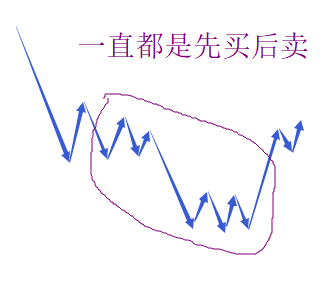
一旦向上段的运作结束后，就进入向下段的运作。向下段的运作刚好相反，是先卖后买，从刚才向上段结束的背驰点开始，所有操作刚好反过来就可以。
【韶山映山红】同级别分解机械操作法的眼里，走势只有下面这６种。第一种不操作，后两种跌买、涨卖。】
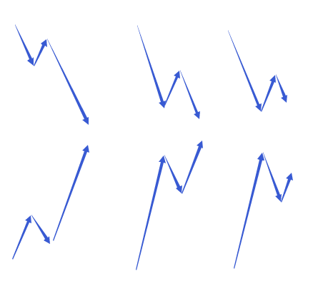
【韶山映山红】这一课的分析，没有涉及同级别分解级别的小转大的情况。】
【韶山映山红】下一课有更详细的操作流程。】
【韶山映山红】同级别分解操作法是段间的操作。怎么判断终点，不是同级别分解操作法的事。】
【韶山映山红】任何级别的终点判断，都有可能因为遭遇某个小转大导致的错判，同级别分解操作法也不例外。怎么办？用次级别操作来纠正？★以后研究。】
【韶山映山红】若禅精舍（陈秋明）：
在大资金的操作中，同级别分解是很重要的。因为可以根据不同级别的同级别分解来操作，每一个级别都匹配一定量的资金，这样就几乎把走势中的所有波动都吃掉。而这种操作方式只是理论上，实际上不可能每一个级别的每一个走势段都能买卖在极限位置。具体实践中会遇到哪些问题，可能每个人都不一样，但有一点是确定的，那就是对于这种事情，理论探讨没有任何意义，必须在实践中去动态掌握。
操作，有两种方式。一种是按中枢来，一种是按走势类型来。
对于围绕中枢的操作，主要关注的是向下离开中枢的走势段背驰与否，和向上离开中枢的第三买点有无，有就介入，没有就等，不参与该级别中枢震荡。而按走势类型来操作，就类似于同级别分解了，这种操作关心的永远是当下的走势段，与前一个同方向走势段背驰与否。而在不同的图形中，有的可能比较适合用中枢来操作，有的比较适合用走势类型来操作。像2015年的大跌那种图形，就比较适合用走势类型，而2018年的下跌，就比较适合中枢，2005年5月1日之前的上涨，就适合5分钟走势类型。注意的是，这里用什么，并没有正确与否的区别，只是不同的人的不同主观视角考量。像2018年的下跌，其实用走势类型也可以，但2005年2月到4月底的上涨，就必须是五分钟级别走势类型。其中的区别需要自己慢慢揣摩。
文中最后那个操作程序，其中有不跌破前一段低点买入这种论述，实际操作中不太好执行，因为不跌破前一段低点的情况下，有是否背驰之分野，如果没有背驰，当下是无法判断是否创新低的，这个问题在指数上好解决，个股上不太好解决，特别是个股的小级别走势。
文末，附沪指2018年9月26日至10月29日的五分钟级别同级别分解图，图中箭头之间都是标准线段，可以作为一分钟级别走势类型来看待，其中黄色箭头表示分解的另一种可能。
而这段走势，其实还有另外一种更加合理的分解，虽然也是基于多义性的分解，但与同级别分解无关了。
】
大盘走势没什么可说的，如果不会看的，就看好5日线，5日线不破，什么问题都没有。
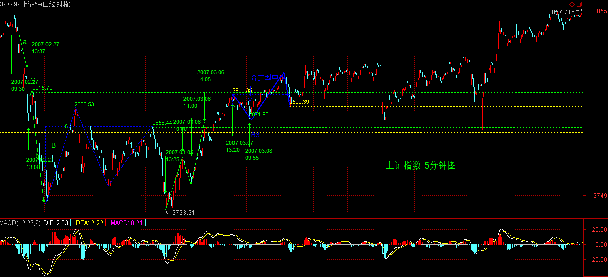
当然，汉奸还会发难的，汉奸特别喜欢周四发难，本ID很欢迎汉奸出手，汉奸最好就把货都倒到3000点以下去，然后离开中国去美国当孙子。
中行今天继续休息等5日线上来，这种大盘股票，不可能太远离5日线，毕竟金融股是汉奸的老巢，上攻过激汉奸会发情的，到时候呕吐一地，让大家恶心就不好了。
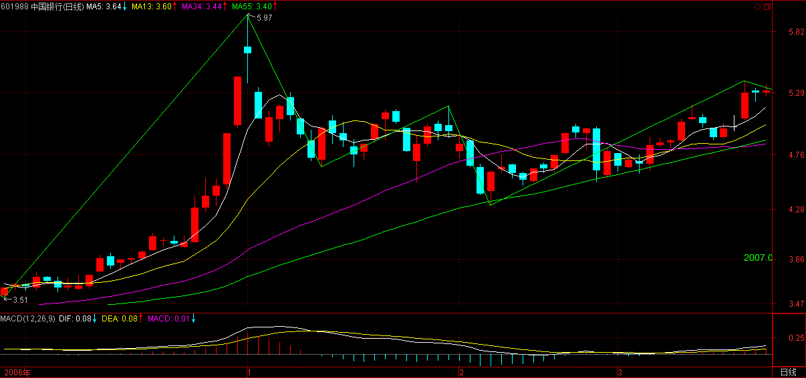
各股没什么可说的，板块依然那些板块，个股依然那些个股。当然，除了那14只股票，联通、中行，本ID最近又独自去偷欢了几只，用本ID减成本的方法，最终的结果就是钱越来越多，而筹码不见少，所以必须多看几个仓才能满足。具体就不说，基本都是北京本地股，熟人多，消息也有保障。
【韶山映山红】000802北京旅游，2014.10.24变更为北京文化。】
那14只个股，元旦前后的前8只，都基本翻倍了，有些已经开始向翻两倍进军，其他的也会跟上来的，关键是你能否按本ID的建议，持有并用部分打短茶，如果能，那你的成本应该不断减，这样就永远不败了。
周四、周五，血战少不了，就看汉奸如何出手了，本ID再等着，大不了再震荡一次，本ID陪着汉奸玩20年，一直玩上30000点，时间多的是，本ID不急。
2007-3-21 15:24
Anytime 2007-03-21 15:26:33
有些药的业绩不好，一直亏损，可以关注吗？
==
任何板块都分一、二、三线，你回想一下去年酒的运动，先一、后二、最后连沱牌这类三线都动起来，就差不多大调整了。酒大调整完还要上的，像去年的有色，今年一样表现。
2007-3-21 15:30
[匿名] 新手 2007-03-21 15:28:43
老大:600343走的实在是太软了,还有戏吗? 【韶山映山红】600343航天动力。】
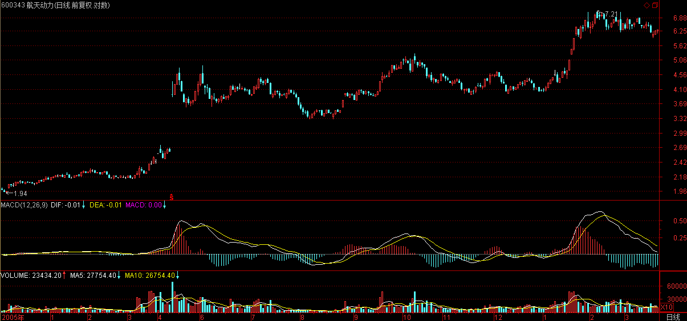
==
343是一个汉奸基金拿得特别多，让他低位吐点出来有什么不好的？中线没问题。
999如果不让那汉奸基金在10元上吐了数以千万股，现在能走成这样吗？
【韶山映山红】000999三九医药，2010.02.24变更为华润三九。】
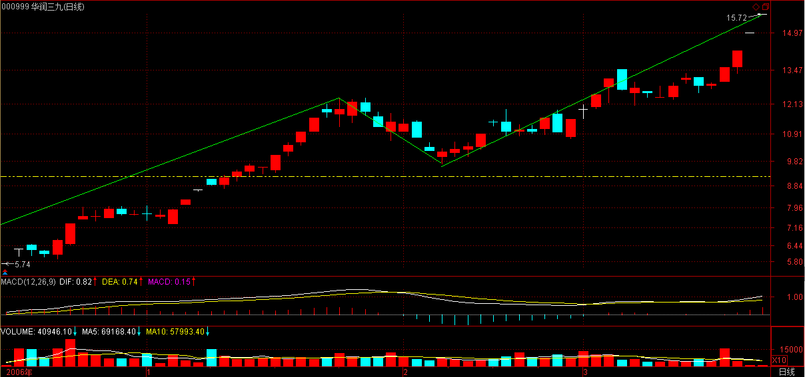
2007-3-21 15:32
[匿名] 草草 2007-03-21 15:41:09
我终于明白了，老师的理论今天又浅显了，以前总是为了买点错失了做短差的机会，现在知道了，也就是这样，当一个股票突破中枢上去，如果没有背持是可以继续持有的，出现了背持就卖，回来不破中枢高点又买，然后上去不过中枢延伸的b段又可以卖了，往返操作，就可以了饿
==
没背驰，就意味着走势类型没结束，还可以继续下去，当然没必要操作了。
2007-3-21 15:44
[匿名] 漂泊 2007-03-21 15:44:15
禅主，今年的电力蓝筹股怎么还不见启动啊？是不是金融股后才是电力啊
==
电力是另一波人在搞，本ID去年负责喝酒，今年负责吃药，顺便再为以后储藏点环保、军工、农业、旅游、科技之类的，电力、汽车这些，本ID可顾不过来，国家又不资助本ID一万几千亿的，不可能把所有板块都搞了。
2007-3-21 15:50
[匿名] 荷塘 2007-03-21 15:47:53
915感觉在今天13:25时5分钟背驰，想做短差但又举棋不定，请LZ指教。
【韶山映山红】000915山大华特。没有5分钟背驰，更低级别的。】
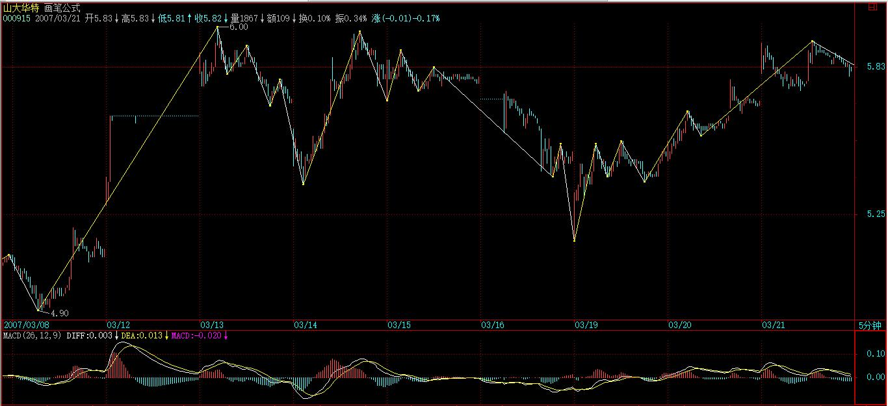
==
本ID这里有一个规矩，就是本ID说的那14只股票，都不具体分析的，因为不能又当球员又当裁判，连黄健翔之流的活也抢来干，这样太不地道了。这10几个股票的具体问题，可以问其他人，其他人可以回答。
2007-3-21 15:53
[匿名] 首钢股份 2007-03-21 15:45:21
女王！汽车股今后是否还有发展？今天000800翻番了我跑光了。
昨天在平安大道看到一个漂亮mm开一辆奥迪Q7越野车，突然想起女王来......
==
其实更好跑一半，变成0成本，这样能获取更大的利益。毕竟很多汽车都是刚上路的。【韶山映山红】000800一汽轿车。】
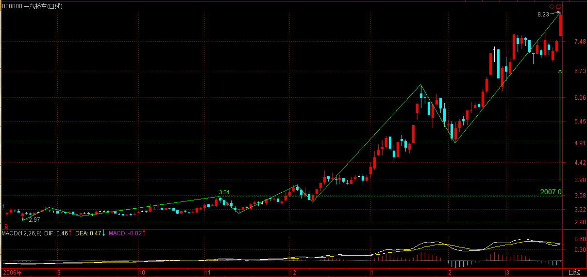
2007-3-21 15:59
[匿名] 白玉兰 2007-03-21 15:57:30
请教妹妹有色金属锌的行情好吗？
==
有色金属的大牛市还要延续很长时间，短线的震荡改变不了大趋势。国内锌期货很快也有了，疯一阵是免不了了。
不过期货风险比股票大，如果没有足够的时间与经验，还是少碰为好。
2007-3-21 16:05
[匿名] 草草 2007-03-21 15:59:41
老师，你是不是在群里啊，我怎么觉得老师在群里啊；老师好像知道我们想什么！！！
==
对不起，本ID没有QQ，平时也没空上网聊天，去不了群里面。
2007-3-21 16:07
[匿名] 勤学好问 2007-03-21 16:05:19
可能楼主没看到，就再发一遍
楼主，从大盘日线上看，macd是不是已经算双０轴回试了？ 有点形成日线上涨背驰的可能，对吗？
==
可能当然有，1.24与2.27的连线，现在也没突破，所以汉奸在技术上是有发难的条件的。
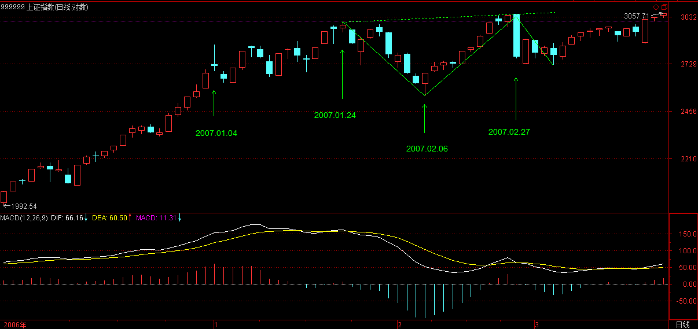
大盘从从去年上来，算上去年5月份后的日中枢，也有两个了，上涨形态出现背驰也是很合理的，除非能在上面再延伸一个日中枢。
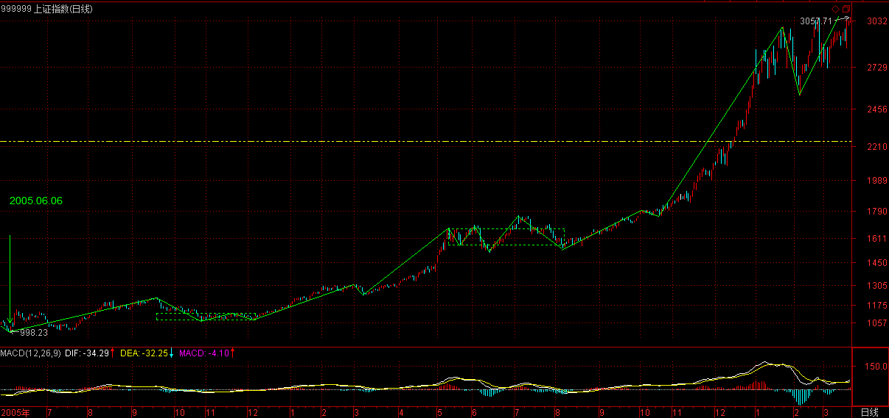
形态是走出来的，没必要预测什么，而且大盘指数并不太重要。元旦到现在，指数没涨多少，但为什么本ID元旦前后说的8只股票都基本翻倍了？
2007-3-21 16:13
[匿名] 白玉兰 2007-03-21 15:57:30
请教妹妹有色金属锌的行情好吗？
==
缠中说禅 2007-03-21 16:05:15
有色金属的大牛市还要延续很长时间，短线的震荡改变不了大趋势。国内锌期货很快也有了，疯一阵是免不了了。不过期货风险比股票大，如果没有足够的时间与经验，还是少碰为好。
-------
匿名] 白玉兰 2007-03-21 16:12:59
谢谢妹妹。有朋友推荐锌也股份的，我根本没实力玩期货呀。
==
有色都没问题，这股票也很好，就是好的买点都过去了，介入有一定的短线风险，中线问题不大。【韶山映山红】000751锌业股份。】
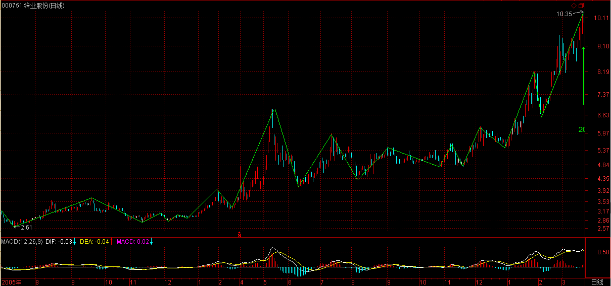
2007-3-21 16:15
[匿名] stone 2007-03-21 16:14:10
lz能不能一个问题一个问题给说说清楚？
比如第三类买点，第一次次级别回抽回到中枢，第二次没回，算不算？很多人有这个疑问
再比如上面问的盘整背驰，按LZ的文章，是对12日上海的5分钟图，是不是对12日上海的30分钟盘整的一段进行盘整背驰分析？
==
第三买买点怎么可能有第一次次级别回抽回到中枢的可能？能回到中枢就不是第三类买点了，第二次没回，那才是第三类买点。
2007-3-21 16:19
[匿名] stone 2007-03-21 15:41:18
比如一个30分钟的盘整（组成一个30分钟中枢）由ABC三段5分钟走势构成，C段正在走，请问：
1。盘整背驰的判断，是看5分钟还是30分钟的图？如果看5分钟图，是不是就是对C段内段进行判断？如何对A段和C段判断？
2。记得LZ说过，黄白线刚上0轴，是不能判断背驰的，是不是针对盘整背驰的？
==
如果用MACD判断，看5分钟图一般情况下比较清楚。【韶山映山红】说是30分钟中枢，其实还是5分钟走势，背驰也是5分钟和5分钟的比较。】
比较当然是A和C比，【韶山映山红】线段类盘整背驰的判断，当然是A和C比较。】当然还可以参考C内部结构确定精确位置，这个背驰段的区间套方法是一个道理。【韶山映山红】对C段内部进行背驰判断，是确定精确位置的区间套方法。】
2007-3-21 16:24
[匿名] stone 2007-03-21 16:14:10
lz能不能一个问题一个问题给说说清楚？
比如第三类买点，第一次次级别回抽回到中枢，第二次没回，算不算？很多人有这个疑问
再比如上面问的盘整背驰，按LZ的文章，是对12日上海的5分钟图，是不是对12日上海的30分钟盘整的一段进行盘整背驰分析？
==
缠中说禅 2007-3-21 16:19
第三买买点怎么可能有第一次次级别回抽回到中枢的可能？能回到中枢就不是第三类买点了，第二次没回，那才是第三类买点。
--------
[匿名] stone 2007-03-21 16:23:48
------问题是你定义过第三类买点必须是第一次回抽才行，
另外能不能回答一下我的盘整背驰问题，谢谢
==
你的理解出现问题，如果跌回中枢里，连回抽都算不上，还是围绕中枢的震荡。
第一次回抽不到中枢，这是第三类买卖点，上去再回抽，如果同样不回到中枢里，但这就不是第三类买卖点了。
第三类买卖点，和中枢延伸的结束是一回事情，关于中枢的延伸结束，前面都有严格的数学定义，可参考。
2007-3-21 16:29
[匿名] stone 2007-03-21 16:29:03
LZ文章----
盘整中往上的情况为例子，往下的情况反之亦然。如果C段不破中枢，一旦出现MACD柱子的C段面积小于A段面积，其后必定有回跌。比较复杂的是如果C段上破中枢，但MACD柱子的面积小于A段的，这时候的原则是先出来，其后有两种情况，如果回跌不重新跌回，就在次级别的第一类买点回补，刚好这反而构成该级别的第三类买点，反之就继续该盘整。
C段要创新高，不可能不破中枢啊？这个地方如何理解？【韶山映山红】24课内容。】
==
C段不一定创新高，没有规定ABC三段，C一定比A高的。
无论盘整背驰、背驰，都是比较其力度，如果连新高都创不出，那力度就最弱，当然更不行。这时候，根本连MACD的辅助都没必要。
MACD只要是辅助创新高的情况。
2007-3-21 16:38
[匿名] 大毛 2007-03-21 16:46:43
缠缠：
一直关注着，以前您讲过“钢是去年的酒”，感到有道理，但我学的理论还是不到位，感到580010偏离了，买入后一直套着，还能坚持吗？
==
钢是去年的有色，药是去年的酒。
马钢权证问题不大，这幅度，随便一天拉起来就解套了。
【韶山映山红】580010马钢CWB1。】
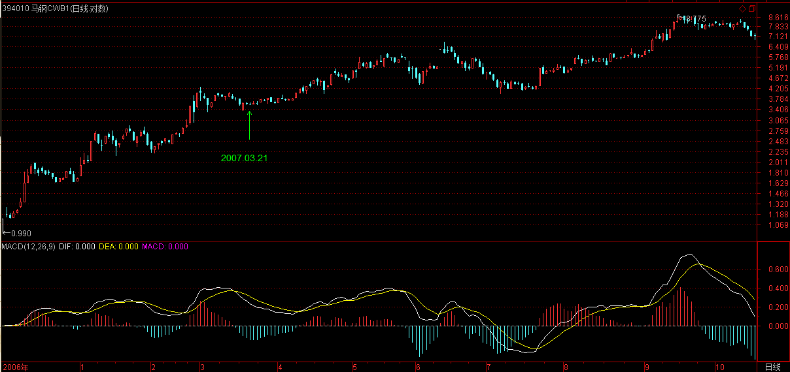
2007-3-21 16:54
[匿名] stone 2007-03-21 16:14:10
lz能不能一个问题一个问题给说说清楚？
比如第三类买点，第一次次级别回抽回到中枢，第二次没回，算不算？很多人有这个疑问
[匿名] 新手 2007-03-21 16:49:31
缠主：大盘2月28日13日13：37分和13：51分缠主不是说两次回抽才形成第三类买点么？前一次有重叠，后一次才真正的算第三类买点，这不是两次么？
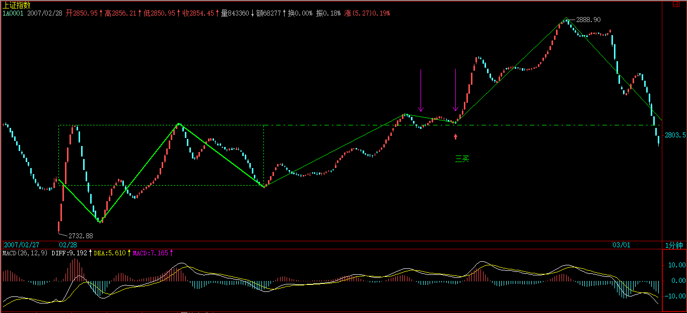
==
两次回抽是只次次级别，一个次级别的走势，当然需要至少三段次次级别的走势，这样当然就有两次回抽，但站在次级别上看，次次级别的第二次回抽才是次级别回抽的完结，那时候次级别才走势完美。
【韶山映山红】这里辨析的是，次级别回踩不进中枢，以谁为准。以次级别区间为准，还是以结束点为准。这里缠师给出的答案是，以结束点为准。】
2007-3-21 16:56
5点了，先下，再见。
2007-3-21 17:00
(2007-03-22 15:28:36)
季康子问：“弟子孰为好学？”孔子对曰：“有颜回者好学，不幸短命死矣！今也则亡。”
杨伯峻：季康子问道：“你学生里谁用功？”孔子答道：“有一个叫颜回的用功，不幸短命死了，现在就再没有这样的人了。”
钱穆：季康子问孔子：“你的弟子哪个是好学的呀？” 孔子对道：“有颜回是好学的，不幸短命死了，现在是没有了。”
李泽厚：季康子问：“你的学生中谁爱学习？”孔子答道：“有一个叫颜回的，好学，不幸短命死了，今天没有了。”
详解：
本章与上章一致，再次肯定颜回是孔子所认定的唯一符合其好学标准的学生，只是回答的对象不同，由此更证明了此观点非孔子一时之论，而是他的一贯之论，也从一个侧面证明，孔子之后打着孔子旗号的人，都不过是借孔子之名贩卖求名而已。
至于对孔子这两章类似回答的繁间之异进行穿凿，都是无聊之举。同样问题，在不同时间、对不同的人，回答大同小异，极为正常。套用心理学，如果一个人对同样问题的回答永远一字不差，那只能证明此人口不对心，所谓回答都在背稿子，而这显然不是孔子所乐意的。
可能有人反问，如果孔子学生后来都违背孔子，那又怎么证明本ID所解的《论语》又是孔子本来的意思？有怎么能证明本ID不是借孔子之名贩卖求名？
这问题早有回答，能解《论语》的，必须超越《论语》，你的见识还比不上孔子，那你又怎么可能解释《论语》？
本ID能把《论语》500多章首尾一致、符合语法地解释出来，如果说孔子的观点有可能达不到本ID解释的那么高，那是孔子的问题，而不是本ID的问题。而且，谁又能证明孔子的观点就没有这么高呢？
本ID只关心《论语》这文本能够诠释的可能意义，而且这些意义是前后贯通且互不矛盾的，这就如同把500章《论语》当成500个方程，本ID所解释的意思就是其公共解里的最大值，而千古以来，能寻到公共解的都罕见，更不用说最大值了。
本ID解释《论语》，如看掌中果，千万别以为这就是本ID的思想，更不要以为本ID是借孔子之口来宣扬自己的思想。本ID自己的思想，想讲就讲，还用借古人之口？这只是孔子可能思想的最大值，但即使是孔子最大值的思想，又怎么明白本ID的所思所想呢？
不仅是本ID，人人都有风光无限，盖天盖地，又岂是一孔子就能笼罩的？孔子又何曾笼罩任何人、憋屈任何人？不过都是自我笼罩、自我憋屈。然后时不时跳几个鲁迅、胡适般的小丑，可笑可怜！
子曰：语之而不惰者，其回也与？
杨伯峻：孔子说：“听我说话始终不懈怠的，大概只有颜回一个人吧！”
钱穆：先生说：“和他讲说了不怠懈的，只是颜回了吧！”
李泽厚：孔子说：“和他谈了，就不松懈怠惰的，大概是颜回吧。”
详解：
如果都按上面这种解释，那孔子绝对是一废物点心，孔子的话，连一部AV都比不上。多少人看了AV后，就可以始终不懈怠，万牛拉不回？又何必颜回？孔子搞了三千弟子，如果说最终只有颜回能完全得其髓，这还说得过去，就像达磨把全中国翻了遍也只找到了二祖一人；但如果孔子连教几十年，听讲后连始终不懈怠都只有颜回一个人，那孔子真该多看AV好好学习了。
“语”，本义“谈论、议论、辩论”；“之”，指代“语“的对象；“惰”，衰败；“其”，通“岂”，难道，表示诘问。 “与”，同“欤”，表诘问。
本章的意思是，难道能言善辩的只有颜回吗？也就是说，颜回之所以是颜回，并不是因为他能言善辩。
当然，一个好学的人，自然能言善辩，但好学不在于能言善辩，多有能言善辩之徒，不过死剩一张嘴，这种人，又有什么用？
这一章，依然是在肯定颜回之学，只有颜回得孔子之髓。
孔子之学，不在言语上，不在文字上，不在如讼师般的口若悬河上，否则，全民讼师化不就完了？就像这个时代，谁都能忽悠、谁都能恶搞，但又有多少人是真明白事的呢？生不知生，死不知死，那叫行尸走肉。人身难得，又有多少人能不耗费在嘴上、床上？说取行不得的，行取说不得的，参！
缠中说禅白话直译
子曰：语之而不惰者，其回也与？
孔子说：任何人与他辩论而他都能语不衰败的所谓能辩之士，难道只有颜回吗？
（待续）
对汉奸的周四发难，昨天已经明说。汉奸总是很听话的，而本ID的股票，除了些新进的北京股，【韶山映山红】000802北京旅游，2014.10.24变更为北京文化。】今天基本上一大早就开始主动调整，就是不想让汉奸有发力的机会。汉奸也特没力，只能选择尾盘偷袭，一点新意都没有。
后面三天特别关键，只要这三天能在前期高位上收住，那突破的有效性就有保障了，很多心态不稳的人也会重新回来。技术上，前几天已经强调了1.27与2.24连线的压力，【韶山映山红】缠师笔误，应该是1.24和2.27。】今天主要就是受阻在这线上，这线的有效突破，才是大盘能走出一轮行情的关键。
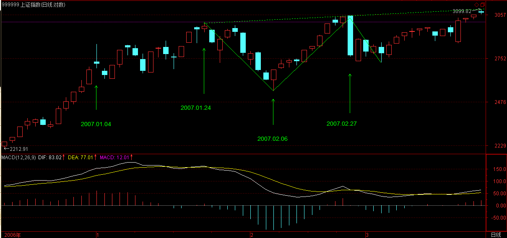
现在的走势很微妙，汉奸也有机会，毕竟现在很多人的心态不稳，但汉奸的机会并不会对本ID造成任何损害，本ID的原则是，稳打不冒进，如果机会不成熟，就反复震荡等机会成熟，绝对不给汉奸好的下手机会。
不过，现在有些多头太冒进、太急功近利，并不是什么好事，本ID只管好自己这一拨就可以，别人爱干什么可管不住。只要实力不断增长，试看几年后是谁的天下？
2007-3-22 15:29
等等，有一个电话谈点事。
2007-3-22 15:35
[匿名] 听缠说禅 2007-03-22 15:36:42
禅妹，这样的尾盘杀跌，没有你我们靠什么预料？又怎样躲开？今天我的股票都走得很好，大盘跌也跟着跌，没出来啊。。。
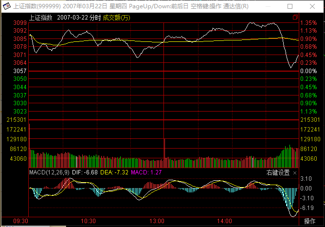
==
1.24和2.27的连线不是一次能突破的，

就算你看看1分钟或5分钟的MACD，也知道这里会有一个小的盘整背驰。
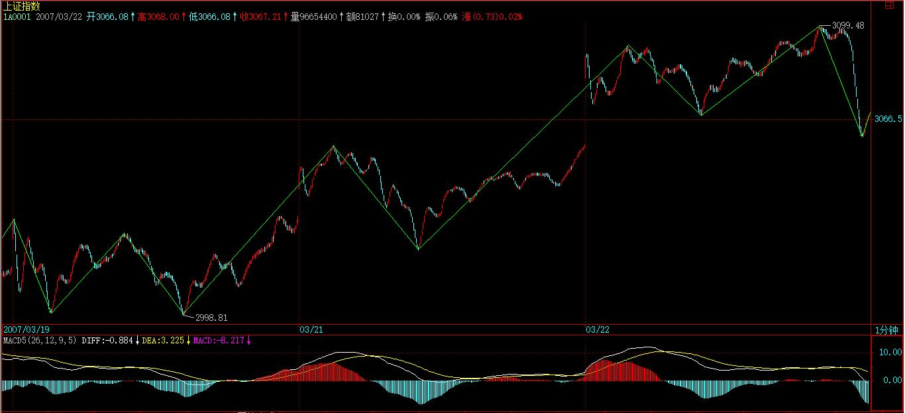
14:30后，上海、深圳走势背离，这就是最好的信号。
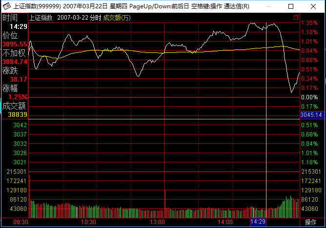
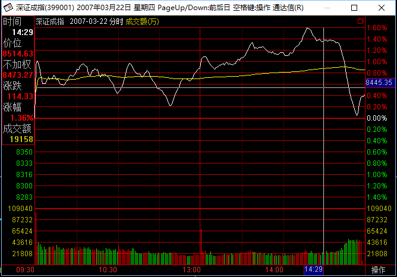
2007-3-22 15:42
[匿名] CCTV
2007-03-22 14:03:19
汉奸可能尾盘发难。
[匿名] CCTV 2007-03-22 15:46:57
妹子，按你的理论，我今天提前判断汉奸尾盘发难`
==
继续努力，后面的路长着。
2007-3-22 15:48
对不起，老有电话，现在好了。
2007-3-22 15:54
[匿名] hehe2 2007-03-22 15:49:58
BLOG 主说的原则真的是太重要了。 可惜本人太急功紧利，经常违反。
今天， 知道要空仓了。 三个股票， 只有一个是按照卖点卖出去的， 其他两个， 有点心急都没有按卖点抛，所以操作上很失误，该赚的钱在面前也没有赚到。
真的是很惭愧。
==
股市永远有机会，路长着，百炼成钢，关键要总结，不怕犯错，就怕总犯同一个错误，永远检讨，永不改正。
2007-3-22 15:55
空读 2007-03-22 15:35:59
缠老大好,某一级别的一段走势,在当下,如何判断走势是否结束?比如30分钟级别第二段向上的走势,如果没到达到第一段的高点,稍微拐头时,从何判断是小跌一下形成一个小级别中枢后再冲高,还是已经走完,一直跌下去了.拐头时下跌多少才能判断出来?要形成低级别的第三类卖点才能确定吗?
==
背驰、盘整背驰，都是走势分段的依据，所谓第三类买卖对盘整结束的确认，最终也要看其内部结构的背驰、盘整背驰。
不是等真跌了才问卖不卖，而是涨的时候一旦进入背驰的区间套里，就要陆续走，当然，资金小的可以等到最后几个价位，资金大的就不可能了。
第一卖点没走，就要在第二卖点走。如果等到第三卖点，估计都跌很多了。
宁愿卖早了，坚决不要卖迟了，股票都是废纸，有钱还怕买不到废纸。
2007-3-22 16:03
炼铁设备 2007-03-22 15:57:19
1.27与2.24连线的压力【韶山映山红】缠师笔误，应该是1.24和2.27。】
请问在那里看？
------
两只老虎 2007-03-22 16:00:30
同问？
==
把两天高点连起来就有了，每天都在变化，不断往上去，在图形上划线就能看到。

2007-3-22 16:05
[匿名] 夜雨 2007-03-22 16:04:44
美女姐姐，最近为什么都不跟我说话了？，伤心中，那我只好继续自言自语了，呵呵，已经成您的忠实弟子了
==
对不起，没看到你的问题。请再发一遍。
2007-3-22 16:06
[匿名] 酒吧心情 2007-03-22 15:46:10
不过，现在有些多头太冒进、太急功近利，并不是什么好事
-----
JJ的这句话说到我心里去了.
今天的状况就是这样,太激进了,很容易被偷袭.
我觉得还是学学老毛,农村包围城市,抗日抗了8年,解放用了3年,
难道股市不能多等个几天?
希望JJ给予点评...
==
本ID现在的能力只能管好自己的地盘，像中行这几天一直不动，其实就是对大盘最大的贡献，就算汉奸敢在这个位置开始对中行发难，下去的空间能有多少？毕竟中行有业绩增长、奥运等特别支持。
现在关键是要稳定人心，绝大多数的人都怕假突破，这就是汉奸的机会，所以一定不能急，不过，市场不是本ID一个人的，有些人的钱，来路不明，急着挣一把就跑，这种人是需要市场好好给点教训。
2007-3-22 16:16
[匿名] 悟禅 2007-03-22 16:13:27
老师，应该是1.24和2.27吧？
[匿名] 千江月 2007-03-22 16:16:30
神仙姐姐，是在不好意思！1月27、2月24日图上没有这两天呀！
应该是1.24－－2.27吧
两只老虎 2007-03-22 16:11:10
神仙姐姐，是在不好意思！1月27、2月24日图上没有这两天呀！
==
对，笔误没法改，大家请看这里的纠正。
2007-3-22 16:20
各位注意了，是1.24与2.27连线，就是上两次冲3000的高点连线。上面笔误改不了，多谢各位指出来。
2007-3-22 16:22
[匿名] 首钢股份 2007-03-22 16:21:44
明天找机会建仓 中行！！
女王，我的问题您没看到，北京旅游和中行在今天砸盘之前的走势不同，不知道您是怎么考虑的？北旅已经连拉阳线，近期是否还有介入的机会？
==
一般投资者没必要参与中行，那是打架用的，幅度不一定能满足小资金的要求。
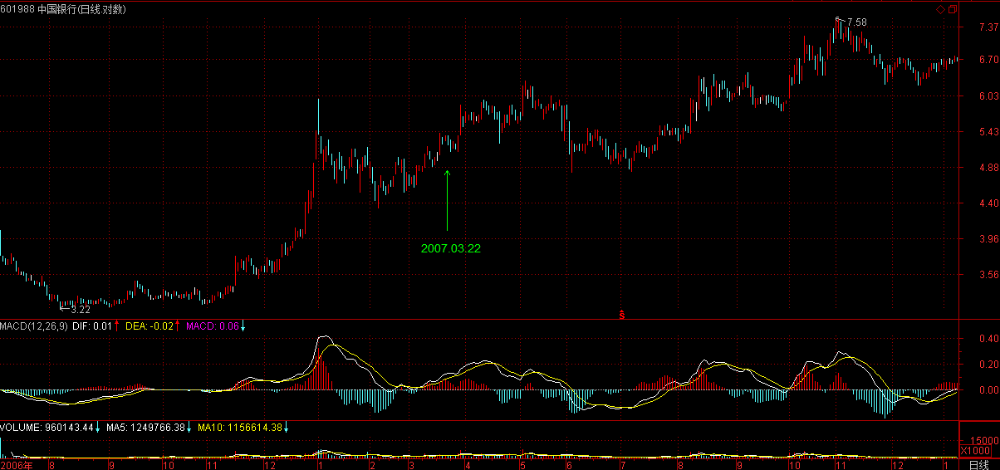
至于怎么考虑这种事情就没必要说了，这里毕竟不是自己家的客厅，什么人都有，把所有底牌都说出来，那就不是对局了，看走势，那是一切。【韶山映山红】000802北京旅游，2014.10.24变更为北京文化。这里是第一次回应“北京旅游”。】
2007-3-22 16:25
[匿名] 听缠说禅
2007-03-22 16:13:04
妹妹，《论语》详解，应该是以前的大作吧，不然每天一篇，别累坏了身体！
==
没有存货，都是随时写的。本ID有个好处就是写东西快，所以问题不大。
2007-3-22 16:28
[匿名] touchnet 2007-03-22 15:57:49
老大昨天的文章
1、不跌破第一段低点，重新买入【韶山映山红】同级别分解的具体的操作程式那一段内容。】
----------
请问老大，这个“不跌破”是靠次别判断吗？
==
对，需要该段内部结构的确认。
2、分解定理，可以分解成同级别的盘整与趋势
------
这个盘整与趋势中的中枢是同一级别吧，不是盘整中的中枢大一级别？
==
同级别分解，当然都是同级别的中枢。不存在盘整中枢更大的问题。更大就分解成小的，这才叫同级别分解。【韶山映山红】同级别分解的主要工作就是分解延伸和扩张升级造成的大级别中枢。】
3、级别分解中的起点问题，走势中任意一高低点都可做一个走势类型的分界点吗？
==
当然不是，必须是前面走势类型的结束点。【韶山映山红】同级别分解的主要有三种形态：本级别的上涨、本级别的下跌、大级别中枢分解成本级别的一堆盘整+盘整。】
2007-3-22 16:47
[匿名] 小明 2007-03-22 16:46:22
老大，600343据我在盘面的观察，3.13日那天不断有大单成交而股价却没怎么动，我当时的理解为庄家在拉升前的调仓，【韶山映山红】600343航天动力。】
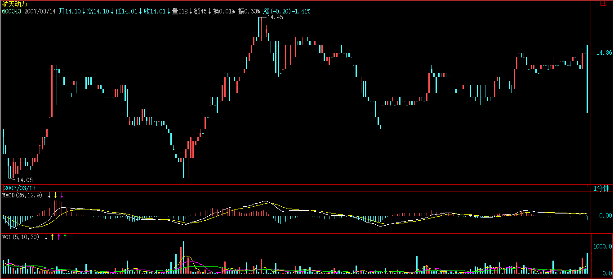
随后3.14日来个陡峭的拉升，我以为是庄家在试盘，更坚定我持有的信心。
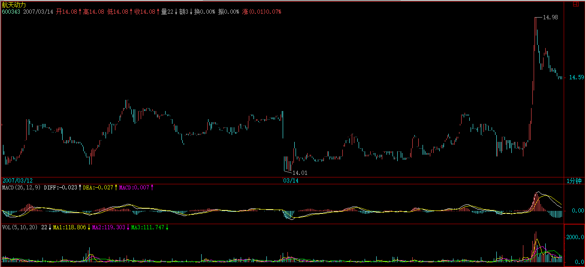
从现在来看好像不是。能不能说说3.13日那天的行为是在干什么？
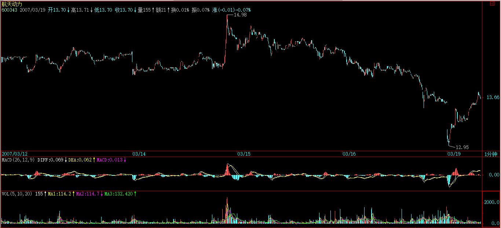
==
思维要改过来，一个股票里不一定只有一拨人，现在的问题是，有一拨人太汉奸，不喜欢他们还待着，就像999破10元那次一样。具体的事就没必要问了。
2007-3-22 16:50
[匿名] 新浪网友 2007-03-22 16:50:18
请问博主.为什么工行是老大,还排在中行后面呢?
==
工行本来就不应该比中行贵，以前只是因为新股，汉奸跑进来容易。无论业绩、盘子、管理水平，工行哪一点比得上中行？【韶山映山红】基本面。】
2007-3-22 16:52
[匿名] 中枢 2007-03-22 16:35:53
缠师：从30分钟底背驰开始，向上的第一段假如是盘整，会表现为哪种形态呢？是a+A+b，还是单独的A呢？他们两者中枢的方向是不一样的，第一个下上下，第二个上下上. 这个问题不解决，判断起来很困难啊
[匿名] 中枢 2007-03-22 16:39:26
补充：判断困难的原因是, 比方A=a1+a2+a3, 当走到a+a1+a2时，我不知道已经形成一个中枢了，还是要等到后面的a3。
==
这个问题，刚好是明天文章要说到的，请耐心等一天。 【韶山映山红】这篇文章就是39课。只不过，并没有真的直接回答这个问题。】
2007-3-22 16:56
两只老虎 2007-03-22 16:34:59
神仙姐姐真是旷世奇女啊！
对了，姐姐，您前几天说的关于“媒体”的事怎么样了？
==
已经成了，具体是什么不方便说，因为不希望在该没完全成型时受到意外干扰，总之以后有一个稳定的渠道了。【韶山映山红】《基金分析》杂志。】
2007-3-22 17:01
[匿名] 中枢
2007-03-22 16:59:48
终于等到老师回复了，多谢！虽然暂时没答案：）
另外问个问题，看了那天对背驰的确切定义，前面多义性讲的a+A+b+B+c，ac不是必然有的，并不是说ac可以不要，只是说可以看成AB的延伸，对吧？
==
也可以没有，例如两个单纯的中枢，中间是一个跳空缺口。
2007-3-22 17:02
对不起，5点了，先下，再见。
2007-3-22 17:02
本课目录
教你炒股票38：走势类型连接的同级别分解《论语》详解：给所有曲解孔子的人（59）季康子问：“弟子孰为好学？”孔子对曰：“有颜回者好学，不幸短命死矣！今也则亡。”子曰：语之而不惰者，其回也与？